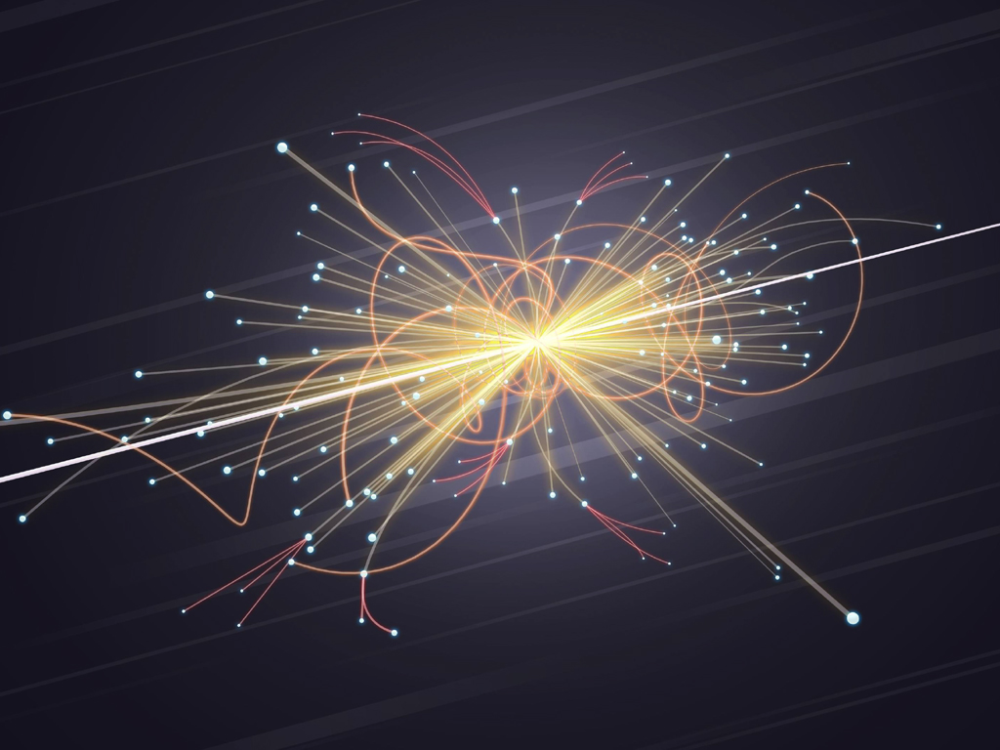

Αστροφυσική
Δυσκολία = Υψηλή | Κόστος = 450$

Αστροφυσική είναι ο κλάδος εκείνος της αστρονομίας που ασχολείται με τη φυσική του Σύμπαντος, με τις φυσικές διότητες των αστρονομικών αντικειμένων, π.χ. άστρων και γαλαξιών, και με την αλληλεπίδρασή τους. Γενικά η αστροφυσική ερευνά και μελετά το σύνολο των διαφόρων διαδικασιών που εξελίσσονται έξω από την ατμόσφαιρα της Γης, δηλαδή στα ουράνια σώματα και στο διάστημα.
Τι θα μάθεις στο συγκεκριμένο μάθημα.
- Physics stuff
Χρήσιμοι συνδέσμοι!
Σωματιδιακή Φυσική
Δυσκολία = Υψηλή | Κόστος = 250$
Η Σωματιδιακή φυσική ή Φυσική των στοιχειωδών σωματιδίων είναι κλάδος της φυσικής που μελετά τα στοιχειώδη σωματίδια που συγκροτούν την ύλη καθώς και την συμπεριφορά (ακτινοβολία), και τις αλληλεπιδράσεις μεταξύ τους. Λέγεται επίσης και φυσική υψηλών ενεργειών, επειδή πολλά στοιχειώδη σωμάτια δεν υφίστανται υπό τις συμβατικές συνθήκες που συναντάμε στη φύση όπως τη γνωρίζουμε στον πλανήτη μας, αλλά μπορούν να δημιουργηθούν και να ανιχνευθούν μέσω ενεργειακών κρούσεων με άλλα σωματίδια, όπως γίνεται στους επιταχυντές σωματιδίων.
Τι θα μάθεις στο συγκεκριμένο μάθημα.
- Physics stuff
Χρήσιμοι συνδέσμοι!
Εφαρμοσμένη Φυσική
Δυσκολία = Υψηλή | Κόστος = 400$

Ως εφαρμοσμένη φυσική ορίζεται ο κλάδος της φυσικής επιστήμης ο οποίος ασχολείται με την ανάπτυξη συγκεκριμένων τεχνολογικών ή πρακτικών εφαρμογών. Διαφοροποιείται από αντίστοιχα πεδία της επιστήμης μηχανικού από το γεγονός ότι ένας επιστήμονας της εφαρμοσμένης φυσικής μπορεί να μην ενδιαφέρεται για την επίλυση ενός συγκεκριμένου πρακτικού προβλήματος, αλλά για την ανάπτυξη ανάλογων μεθοδολογιών και συσκευών οι οποίες αξιοποιούν τις αρχές της φυσικής.
Τι θα μάθεις στο συγκεκριμένο μάθημα.
- Physics stuff